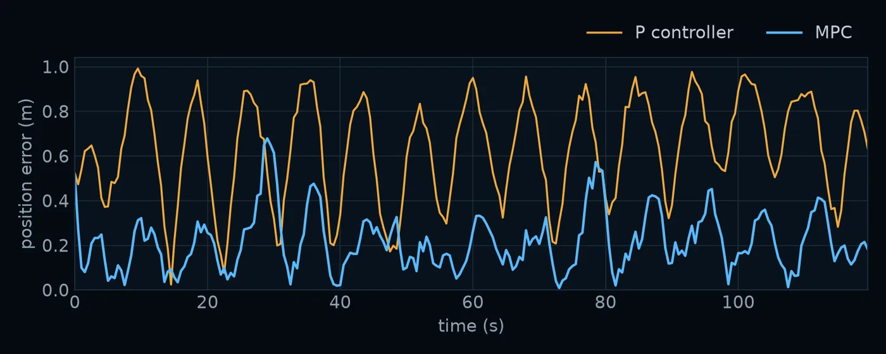

01 / Problem
Follow a moving target with a noisy robot.
A differential-drive robot moves as a unicycle, with linear speed v ∈ [0, 1] m/s and turn rate ω ∈ [−1, 1] rad/s, updated every 0.5 s. Every step adds Gaussian motion noise (σ = 0.04 m in position, 0.004 rad in heading), so the robot never goes exactly where it was told.
It has to track a reference point moving along a Lissajous figure-eight for 120 s while staying clear of two 0.5 m obstacles. The reference passes 0.3 m inside one of them, so a controller that tracked it perfectly would crash: it has to trade tracking error against clearance.
02 / Controller
Plan 15 steps ahead, apply one, repeat.
Every 0.5 s the controller solves a nonlinear program over the next 15 steps (7.5 s), applies only the first command, and solves again from wherever the noise has put the robot. Planning as if the noise were zero is the certainty-equivalence step; replanning every step is what absorbs it.
The program minimises a discounted sum of position error, heading error and control effort, subject to the robot’s dynamics, its speed limits, and one inequality per obstacle per step:
min Σₖ γᵏ ( ‖pₖ − rₖ‖²_Q + q (1 − cos(θₖ − θᵣ,ₖ))² + uₖᵀ R uₖ )
s.t. xₖ₊₁ = f(xₖ, uₖ) noise-free unicycle
0 ≤ v ≤ 1, −1 ≤ ω ≤ 1
(xₖ − xₒ)² + (yₖ − yₒ)² ≥ (rₒ + 0.15)² each obstacle, each stepWith Q = diag(400, 20), q = 10, R = diag(20, 2) and γ = 0.9: tracking dominates, and turning is cheap compared with speeding up.
03 / Results
4.4× closer to the path, and clear of the obstacles.
Both controllers ran the same 20 noisy 120-second runs (same noise seeds), against the P controller the course provides as a baseline.
| P controller | MPC | |
|---|---|---|
| Mean position error | 0.914 m | 0.209 m |
| Range across runs | 0.59–1.74 m | 0.20–0.23 m |
| Worst position error | 5.81 m | 0.69 m |
| Steps inside an obstacle (of 4,800) | 184, in 19 of 20 runs | 1 (5 mm, one run) |
| Median time per control step | <0.1 ms | 5.1 ms |

The MPC is also consistent: its mean error varied by 3 cm across the 20 runs, the P controller’s by more than a metre.
04 / Design choices
What makes it fast and safe.
- Smooth obstacle constraints. Squared distance against squared radius is differentiable everywhere, so IPOPT can use its gradients. A yes/no “inside the obstacle” test gives the solver nothing to follow.
- Build once, solve many times. The program is built once with the current state and the 15 reference points as parameters, and each solve starts from the previous plan shifted by one step. That keeps the median solve at about 5 ms, far inside the 500 ms control period.
- A margin sized to the noise. Obstacles are inflated by 0.15 m, about 3.75 times the per-step noise. Constraints hold for the noise-free prediction, so a large enough noise kick can still push the robot inside after the plan is made: that is the single 5 mm contact in 4,800 steps.
05 / Limits and next steps
Certainty equivalence ignores the noise it plans around.
- A fixed margin cannot rule out every contact under unbounded Gaussian noise. Chance constraints or tube MPC would bound the risk explicitly.
- The controller knows the model exactly; real robots add model error, delay and slip.
- I also set up generalised policy iteration on a discretised error space, with transition tables precomputed in parallel with Ray. It did not reach a working policy within the project, so the comparison here is against the P controller.